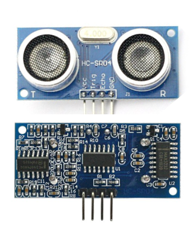
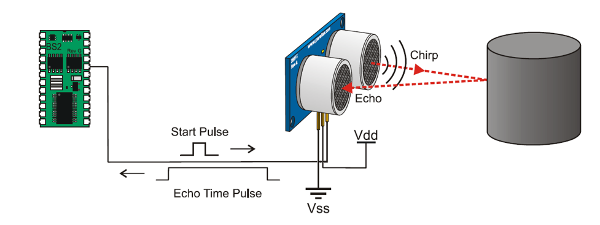
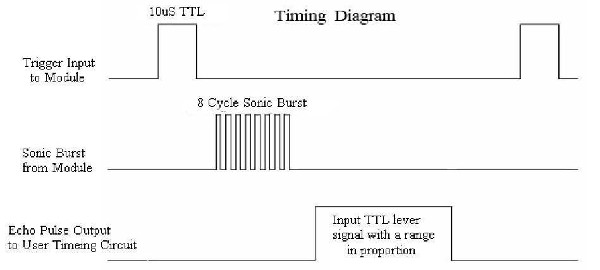
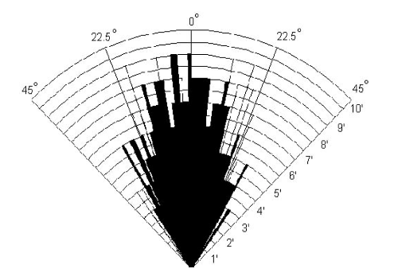
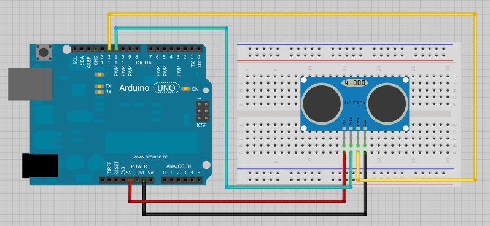

Archived note, written in 2016, while I was at MIT FabLab Kerala. Tools and versions have moved on since.
Ultrasonic Sensor
Distance measurement using HC-SR04
The HC-SR04 ultrasonic sensor uses sonar to determine distance between the sensor itself and an object(s) in the front.

Image source : http://i2.wp.com/randomnerdtutorials.com/wp-content/uploads/2013/11/ultra.png?w=330
The sensor has the following pins
- Vcc (+5V)
- Trig(Trigger)
- Echo
- GND
HC-SR04 works on 5V DC and takes 15mA current.It can be used to measure distance between 2cm and 400 cm and works on a frequency of 40Hz
Working
The device works by sending an ultrasonic pulse and measuring the pulse (time) width of the echo signal

Image source : arduinosensors.com/wp-content/uploads/2014/05/Ultrasonic_4.png
Actual working of the sensor is a bit more complicated.

Image source : HC-SR04 Datasheet
- The trigger pin is made high (5V) for 10 microseconds to trigger the sensor
- The sensor will hence transmit an ultrasonic signal ,an 8 cycle burst of ultrasound at 40 kHz
- The sensor makes the echo pin high on arrival of echo
- Distance is proportional to the time for which the echo pin is made high by the sensor
- The distance can be calculated easily as distance = speed x time.The speed of sound is 340 metres per second or 29 MicroSeconds per centimeter.Also the actual distance is half of what mentioned previously.

It is also worth noting that the sensors works best when the subject is within a plane angle of 30 degrees , as observed from the performance chart given above.
Interfacing with Arduino
The sensor may be connected as follows

Image source : http://i0.wp.com/randomnerdtutorials.com/wp-content/uploads/2013/11/schematics.png
Arduino Code
#define trigPin1 11
#define echoPin1 12
long duration, distance, UltraSensor;
void setup()
{
Serial.begin (9600);
pinMode(trigPin1, OUTPUT);
pinMode(echoPin1, INPUT);
}
void loop() {
SonarSensor(trigPin1, echoPin1);
UltraSensor = distance;
Serial.println(UltraSensor);
}
void SonarSensor(int trigPin,int echoPin)
{
digitalWrite(trigPin, LOW);
delayMicroseconds(2);
digitalWrite(trigPin, HIGH);
delayMicroseconds(10);
digitalWrite(trigPin, LOW);
duration = pulseIn(echoPin, HIGH);
distance = (duration/2) / 29.1;
delay(100);
}